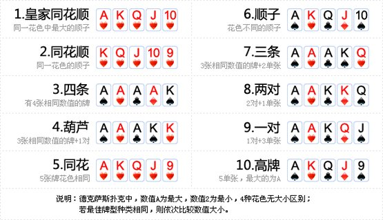

德州扑克规则（本地特色）
作为一个大学生，想必德州扑克是基本的社交方式之一，今天就来写一个规则，以后方便大家看。
德州扑克的规则分两部分。
比大小
比大小的规则决定谁是赢家。每个人手中会有两张手牌（仅自己看见），而公共区域有五张牌（所有人都可以看见），也就是说一个玩家一共可以看见七张牌。你需要从你看见的七张牌中选择恰好五张组成最大的牌型。最后将每个玩家的最大牌型做比较，最大的（可能不唯一）获得胜利。
牌型从大到小分别是：

相同的牌型按照规定顺序排好后比较字典序。比如三条的规定顺序是三条排前面，两个单张排后面（大的在前小的在后）。
需要注意：在顺子中 A 既可以当作 14 （10JQKA）也可以当作1（A2345，此为最小顺子）。
游戏过程
游戏的过程可以概括为：
- 小盲、大盲（小盲的两倍）下注，大盲是小盲的下家（逆时针）
- 从小盲开始逆时针依次发牌，每人两张。
- （入场注）从大盲的下家开始依次下注，首轮下注为限定注，数额为大盲的数额，到小盲的上家为止。
- （首轮）从小盲开始下注为非限定注，可进行非连续的自由加注。
- 发三张公共牌（都可看见），然后从小盲开始下注（非限定）。
- 发一张公共牌，然后从小盲开始下注（非限定）。
- 发一张公共牌，然后从小盲开始下注（非限定）。
- 场上玩家公开手牌决定胜负。
下注
在决定胜负前，奖池中的筹码是每个人分开计数的，不能混到一起。每轮下注从小盲开始逆时针依次询问。
任何时候退出游戏，奖池中的筹码都无法收回。任何时候退出游戏，在游戏结束前不可公开手牌。
下注的总体规则是：你需要将你下的注补到场上的最高注。只有一个例外：如果你没钱了，就可以不用补到最高注。否则视为退出游戏。
在非限定注的情况下可以加注（也就是比最高注严格更多）。只要在场（即尚未退出的）玩家还有人没有下到最高注（并且不是没钱的那种）那么就得继续轮询下注。
一个玩家不可连续加注：也就说如果本轮下注的上一次加注是你，那你无法再次加注。
如果本轮下注开始时，你已经是场上的最高注（实际上本来就是这样），那么你可以不加注。
筹码分配
场上的赢家可以收回自己投入奖池的筹码。剩余的筹码可以平分。如果你梭哈了，那么你从每个失败的玩家中拿到的筹码不得多于你下注的筹码数。
修订记录
- 2023年2月15日 第2次修订
- 2023年2月15日 创建文章